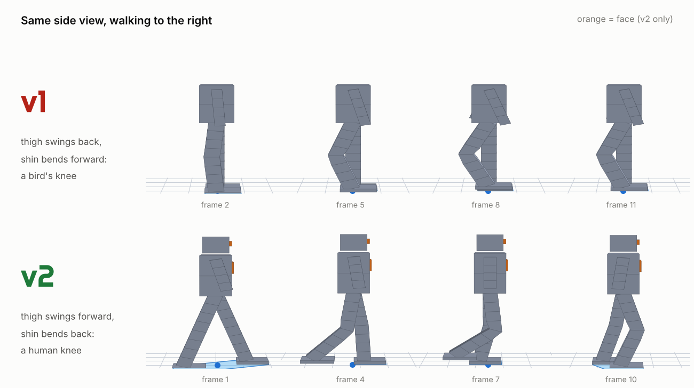

What changed in v2
v1's robots walked with bird-like knees, "fell" because a keyframe pushed the hips into the floor, and had no face, so it was hard to tell which way they were walking. v2 rebuilds the robots, the defects and all 90 Beam runs.
Human knees
The thigh swings forward and the shin bends backward, like a person. The knee defect is now hyperextension: the shin bends forward past straight, beyond the rig's limit (−150° … +5°). Clamping it to the limit is not enough: the straight leg pushes the foot into the floor, which the verifier also rejects.
v1: thigh swung back, shin bent forward ("knee flip"), and the clamped "fix" looked stiff.Physical falls
The defect is a posture that can't stand: the upper body leans or slides sideways until the center of mass leaves the feet's support polygon for 6+ frames. The fall itself is simulated with Bullet.
v1: a keyframe sank or tipped the root bone.A face
An orange visor on the head and a plate on the chest mark the front, so you can always tell which way the robot is facing.
v1: plain boxes, front and back looked the same.Walks forward
The hips travel forward while the stance foot stays planted, and the toes point the way the robot moves. The verifier checks both. Left and right now match a robot facing forward.
v1: walked in place; left/right were mirrored.